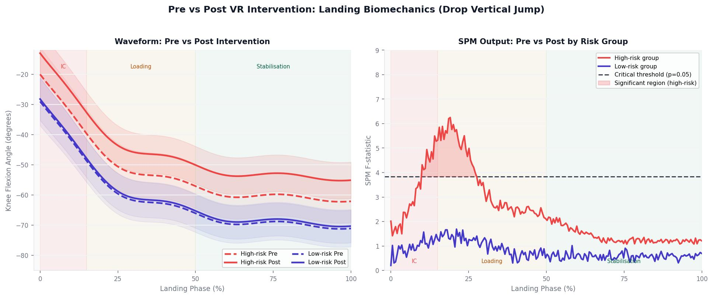

Statistical Analysis: Discrete and Waveform Approaches
Process
A 2 (group: high-risk vs low-risk) x 2 (time: pre vs post) repeated-measures ANOVA examined between-group interactions across all kinematic and kinetic variables. Within-group comparisons used a repeated-measures general linear model, with Bonferroni and Games-Howell post-hoc tests for multiple comparisons and potential unequal variances. Effect sizes were reported as Hedge's g, categorised as trivial, small, moderate, large, very large, or extremely large. For the waveform analysis, SPM1D was applied to time-normalised data from both landing phases using spm1d in MATLAB, with a one-way ANOVA to detect within-group differences pre- and post-intervention.
Why Hedge's g over Cohen's d?
Hedge's g applies a correction factor for small sample sizes that Cohen's d does not, making it a more appropriate effect size estimator when group sizes are unequal or limited, as is the case with the high-risk and low-risk subgroups in this study. Reporting effect sizes alongside significance values was important here because the primary interest was not simply whether change occurred, but the magnitude and practical relevance of any intervention-driven change in landing mechanics.

Fig 3. SPM1D waveform analysis: pre/post knee flexion angle trajectories by risk group (left) and SPM F-statistic with critical threshold identifying time-windows of significant change in the high-risk group (right).